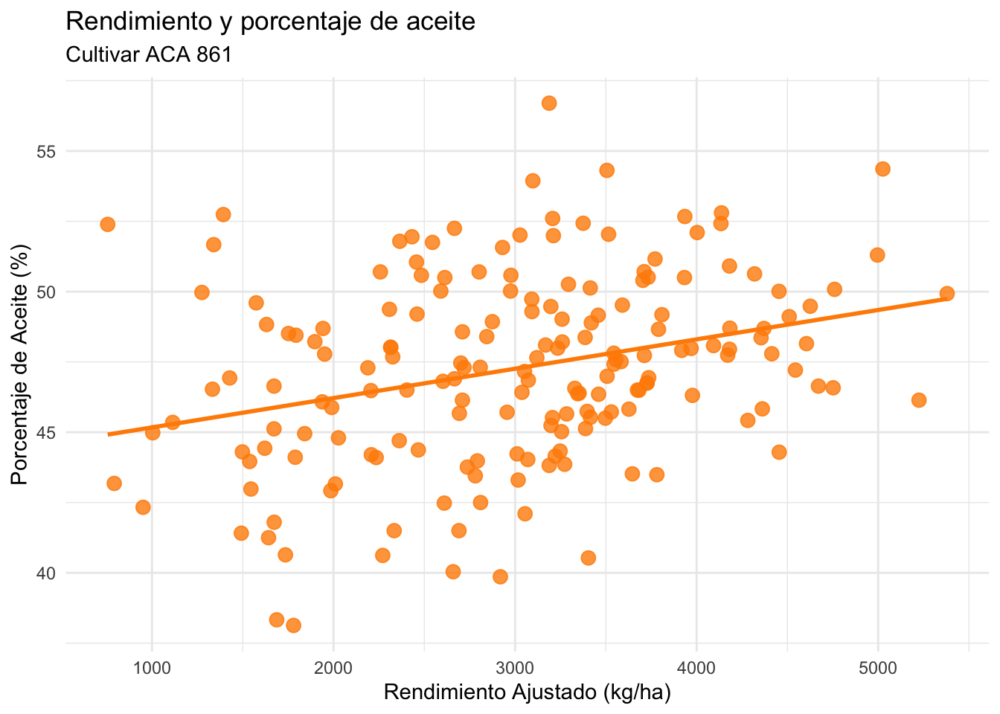
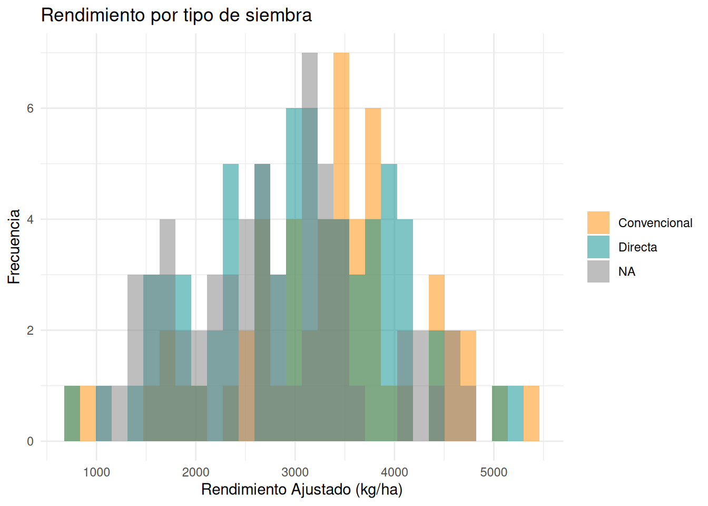

| Localidad | Cantidad | Rendimiento Ajustado Medio |
|---|---|---|
| ACA 203 | 3 | 2309.00 |
| ACA 203 CL | 57 | 3089.07 |
| ACA 203 CL DM | 3 | 3771.33 |
| ACA 211 CL | 9 | 2870.11 |
| ACA 350 CL PLUS | 18 | 3438.56 |
| ACA 769 | 1 | 3744.00 |
| ACA 861 | 185 | 3004.15 |
| ACA 862 | 1 | 3483.00 |
| ACA 862 HO | 14 | 2673.43 |
| ACA 863 | 82 | 3021.51 |
| ACA 864 DM | 31 | 3473.55 |
| ACA 865 | 12 | 3256.08 |
| ACA 866 HO | 21 | 2845.55 |
| ACA 867 | 43 | 3394.21 |
| ACA 868 HO | 15 | 3645.21 |
| ACA 876 | 1 | 1691.00 |
| ACA 884 | 1 | 1654.00 |
| ACA 885 | 1 | 1574.00 |
| ACA 886 | 1 | 1588.00 |
Cultivar ACA 861
Sobre los datos
Los datos de la Red Nacional de Cultivares de Girasol fueron recogidos y puestos a disposición por investigadores de la Estación Experimental Agropecuaria Anguil del INTA. El conjunto de datos con el que trabajamos es un subconjunto de todos los datos de la red e incluye los resultados de distintos tipo de ensayos de cultivares de girasol en varias localidades de Argentina.
Cultivar ACA 861
En esta sección centramos el análisis en el cultivar ACA 861. En este gráfico observamos la relación entre el porcentaje de aceite y el rendimiento.

Este es la distribución de los rendimientos del cultivar ACA 861, los colores muestran el tipo de siembra utilizado en los ensayos.

El rendimiento de un cultivar se comportan diferente según la zona geográfica. Este es un listado de localidades ordenado de mayor a menor por el rendimiento del cultivar ACA 861.
| Cultivar | Cantidad | Rendimiento Ajustado Medio |
|---|---|---|
| Ascasubi | 2 | 5188.00 |
| Hilario Ascasubi | 2 | 4693.00 |
| Asturias | 1 | 4454.00 |
| Carretero | 1 | 4282.00 |
| General Villegas | 1 | 3935.00 |
| Bellocq | 9 | 3929.44 |
| Trenque Lauquen | 3 | 3908.50 |
| Tandil | 9 | 3823.89 |
| Miramar | 4 | 3799.00 |
| El Carretero | 1 | 3712.00 |
| Ceres | 2 | 3709.00 |
| Pehuajo | 2 | 3613.50 |
| Hansenkamp | 1 | 3591.00 |
| Villegas | 5 | 3557.60 |
| General Madariaga | 1 | 3515.00 |
| Bulnes | 5 | 3429.40 |
| Sachajov | 1 | 3386.00 |
| Pieres | 7 | 3295.71 |
| San Justo | 3 | 3280.33 |
| Carlos Casares | 1 | 3248.00 |
| Las Breñas | 1 | 3197.00 |
| Intendente Alvear | 3 | 3189.33 |
| Nogoya | 1 | 3188.00 |
| Daireaux | 3 | 3176.33 |
| General Belgrano | 2 | 3176.00 |
| Coronel Suarez | 12 | 3046.67 |
| Balcarce | 17 | 3012.82 |
| Pergamino | 3 | 3001.67 |
| Parana | 5 | 2807.40 |
| Rocamora | 2 | 2765.00 |
| Vicuña Mackenna | 4 | 2723.00 |
| Martinez de Hoz | 1 | 2701.00 |
| Reconquista | 12 | 2649.17 |
| Barrow | 8 | 2646.62 |
| Rafaela | 2 | 2643.50 |
| Manfredi | 13 | 2606.92 |
| Anguil | 5 | 2568.40 |
| Huinca Renanco | 8 | 2546.25 |
| Pavon | 1 | 2308.00 |
| Las Toscas | 4 | 2184.75 |
| Villa Ocampo | 4 | 2025.50 |
| Gualeguay | 3 | 1934.00 |
| Los Frentones | 1 | 1672.00 |
| Gualeguaychu | 2 | 1660.00 |
| Villa Mirasol | 1 | 1631.00 |
| Pichi Huinca | 1 | 1428.00 |
| La Paz | 1 | 1393.00 |
| La Montenegrina | 1 | 1340.00 |
| Rancul | 1 | 1333.00 |
| Tres Lomas | 1 | 792.00 |
| Roque Saenz Peña | 1 | NaN |